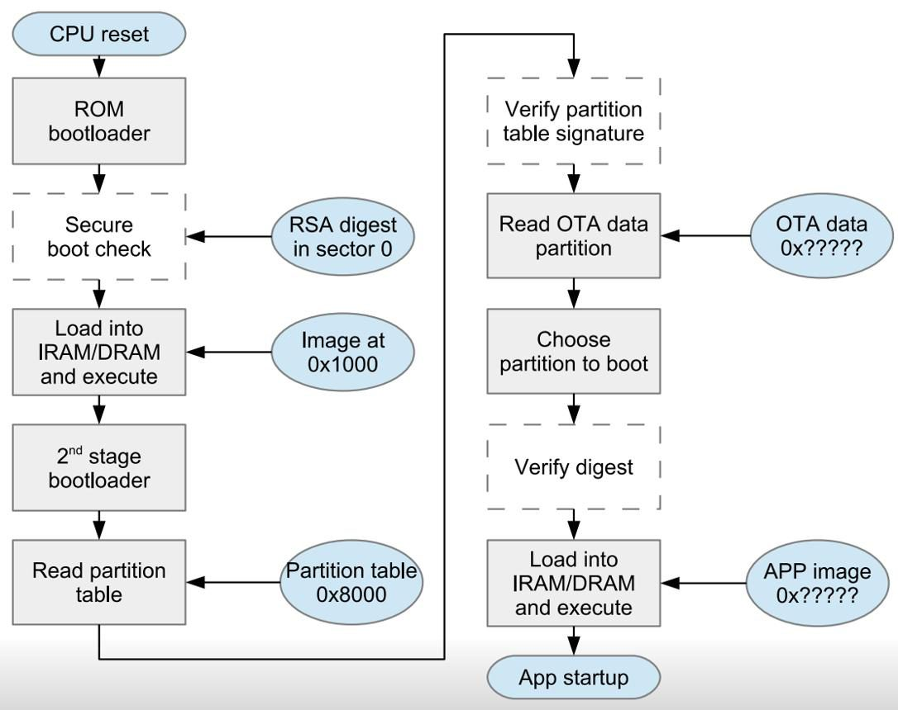
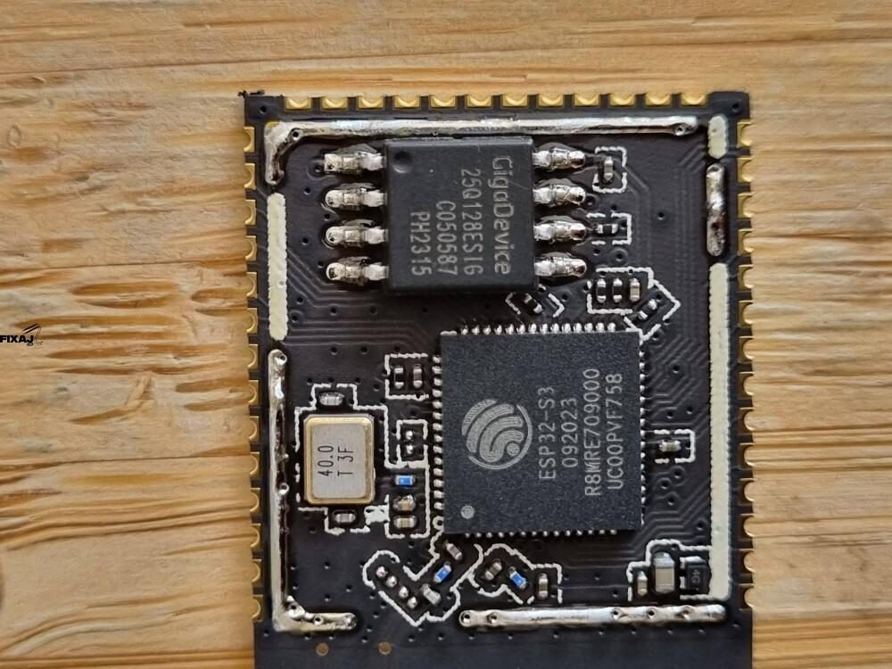
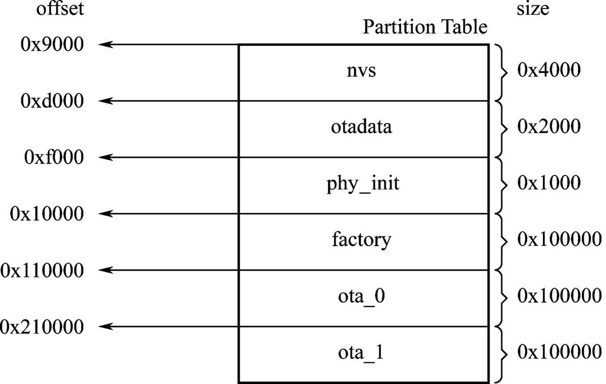
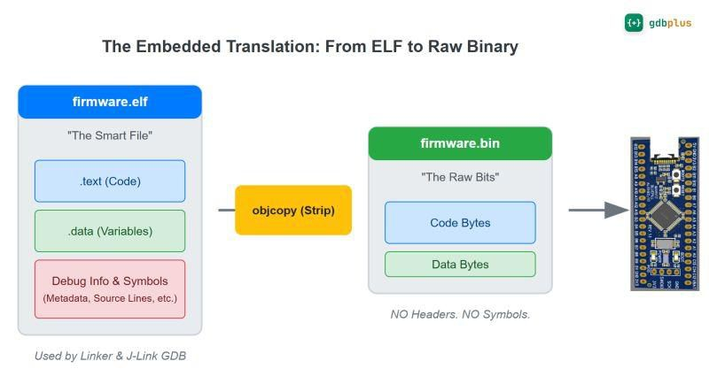

第九课：XIAO ESP32S3 启动原理、Bootloader、Flash 分区与固件安全
前面八课，我们已经学习了 XIAO ESP32S3 的主要开发技术：
- CPU、寄存器、中断和时钟；
- SRAM、Flash 和 PSRAM；
- GPIO、I2C、SPI、UART、ADC；
- FreeRTOS 多任务；
- Wi-Fi、BLE、MQTT 和 OTA；
- 摄像头、I2S 音频、DMA 和 JPEG。
现在进入嵌入式开发中非常重要的一部分：
一块 ESP32-S3 开发板上电之后，究竟是如何找到并运行你的程序的？
理解这部分之后，你就能理解：
- 为什么需要 Bootloader？
- 为什么固件要烧录到特定 Flash 地址？
- 为什么 ESP32-S3 有分区表？
- OTA 为什么需要两个固件分区？
- 程序升级失败后如何恢复？
- 如何防止别人随意读取和修改固件？
一、XIAO ESP32S3 上电后发生了什么？
先看整个启动过程。

当你给 XIAO ESP32S3 接通 USB 或外部电源后，并不是直接运行 app_main()。
它需要经过多个阶段。
1. 第一阶段：Boot ROM
Boot ROM 是 ESP32-S3 芯片内部的只读启动代码。
它由芯片制造商固化，通常不能像普通应用程序一样修改。
主要负责：
- 读取启动配置；
- 判断启动模式；
- 初始化必要的硬件；
- 从 SPI Flash 加载第二阶段 Bootloader；
- 在下载模式下支持固件烧录。
例如你使用 USB 烧录程序时，芯片可以进入下载模式，由烧录工具通过 ROM 下载协议与芯片通信。
2. 第二阶段：Bootloader
Second Stage Bootloader 存放在外部 Flash 中。
它比 Boot ROM 更灵活，可以由 ESP-IDF 工程生成。
它主要负责：
- 读取分区表；
- 确定应用程序位置；
- 处理 OTA 启动分区；
- 验证固件（取决于安全配置）；
- 加载应用程序；
- 将控制权交给应用程序入口。
3. 第三阶段：Application
Bootloader 选择应用固件后，会完成必要的映射和启动准备，将执行流程交给应用程序。
随后 ESP-IDF 完成 C 运行环境和系统初始化，创建主任务，最终调用：
void app_main(void)
{
printf("XIAO ESP32S3 Started!\n");
}这就是你平时编写的程序入口。
注意：app_main() 并不是芯片真正的第一条执行指令，它是在 ROM、Bootloader 和 ESP-IDF 初始化之后才执行的。
二、ESP32-S3 的 Flash 究竟是什么？
XIAO ESP32S3 使用外部 SPI Flash 保存固件和配置数据。
普通版 XIAO ESP32S3 常见规格为：
- 8MB Flash；
- 8MB PSRAM；
- ESP32-S3R8 核心模组。
具体项目仍然应该以板卡版本和实际芯片识别结果为准。

1. Flash 和 RAM 的区别
| 特性 | Flash | SRAM | PSRAM |
|---|---|---|---|
| 断电保存 | 是 | 否 | 否 |
| 主要用途 | 固件、配置、文件 | 实时运行数据 | 大型运行缓存 |
| 访问速度 | 相对较慢 | 快 | 通常低于内部 SRAM |
| 擅长频繁读写 | 不适合直接当普通 RAM | 适合 | 适合 |
| 擅长保存程序 | 是 | 否 | 通常不作为固件存储 |
这里特别注意：
Flash 不是 RAM。
程序虽然存储在 Flash 中，但运行时 ESP32-S3 可以通过 Flash 映射机制访问代码和只读数据。
PSRAM 则主要用于运行时数据缓存。
2. Flash 为什么不能像 RAM 一样随意修改？
SPI NOR Flash 的写入和擦除具有特殊限制：
- 读取可以按字节进行；
- 编程通常要求遵循页编程规则；
- 擦除以扇区或更大的块为单位；
- 不能简单地把任意一个 bit 从 0 改成 1。
通常需要先擦除对应区域，再写入新数据。
因此不能把 Flash 当成普通 C 数组：
char *p = (char *)0x3F0000;
p[0] = 123; // 不能这样直接写 Flash要使用 ESP-IDF 提供的 Flash API、NVS 或文件系统。
三、Partition Table：Flash 分区表是什么？
这是本课最核心的知识。
假设你的开发板拥有 8MB Flash。
如果将整个 Flash 都当成一个固件区域，那么就很难同时实现：
- 保存设备配置；
- 保存文件；
- 保存 OTA 固件；
- 保留旧版本固件；
- 存储设备校准数据。
因此需要把 Flash 划分成多个区域。
这就是 Partition Table。

1. 常见 Flash 分区
| 分区 | 类型 | 作用 |
|---|---|---|
| NVS | data | 保存 Wi-Fi、设备配置等 |
| otadata | data | 保存 OTA 启动选择信息 |
| phy_init | data | 保存无线 PHY 初始化数据 |
| factory | app | 出厂固件 |
| ota_0 | app | OTA 固件槽位 0 |
| ota_1 | app | OTA 固件槽位 1 |
| spiffs | data | 文件存储 |
| littlefs | data | 文件存储 |
不是每个项目都需要这些分区。
例如普通联网设备可以只使用 NVS、otadata、两个 OTA 分区和 PHY 初始化分区。
2. 一个 8MB Flash 分区示意
3. 为什么 OTA 需要两个分区？
假设设备当前运行：
OTA_0：固件 V1.0
OTA_1：空闲现在你准备升级到 V1.1。
不能直接覆盖正在运行的 V1.0。
因为一旦下载失败或断电，设备可能无法正常启动。
正确方式：
当前运行 OTA_0
↓
下载 V1.1
↓
写入 OTA_1
↓
校验固件
↓
设置 OTA_1 为下次启动
↓
重启设备
↓
运行 V1.1如果新固件启动失败并且启用了回滚机制，就可以恢复到 V1.0。
这就是双分区 OTA 的基本原理。
四、实际创建自己的 Flash 分区表
现在我们不只理解概念，还要学习如何在 ESP-IDF 中配置分区。
ESP-IDF 使用 CSV 文件描述分区布局。
例如创建：
partitions.csv1. 一个适合 8MB Flash 的教学分区方案
下面是一个示例：
# Name, Type, SubType, Offset, Size, Flags
nvs, data, nvs, 0x9000, 0x6000,
otadata, data, ota, 0xF000, 0x2000,
phy_init, data, phy, 0x11000, 0x1000,
ota_0, app, ota_0, 0x20000, 0x280000,
ota_1, app, ota_1, 0x2A0000, 0x280000,
littlefs, data, spiffs, 0x520000,0x2E0000,这个例子总共使用 8MB Flash 的地址空间。
| 分区 | 起始地址 | 大小 |
|---|---|---|
| NVS | 0x9000 | 24KB |
| OTA Data | 0xF000 | 8KB |
| PHY Init | 0x11000 | 4KB |
| OTA_0 | 0x20000 | 2.5MB |
| OTA_1 | 0x2A0000 | 2.5MB |
| 文件系统 | 0x520000 | 2.875MB |
注意：
- 这是教学用分区布局，不是所有项目的通用最佳方案。
spiffs是分区子类型名称，实际使用 LittleFS 时需要相应文件系统组件支持。- OTA 固件必须能完整装入两个 OTA 分区。
- 还要为 Bootloader、分区表和其他系统数据保留空间。
- 实际构建时必须确认所有分区没有重叠，并且符合擦除扇区对齐要求。
2. 如何让 ESP-IDF 使用这个文件？
打开：
idf.py menuconfig进入：
Partition Table
↓
Partition Table
↓
Custom partition table CSV
↓
partitions.csv然后保存配置。
也可以检查 sdkconfig 中的配置：
CONFIG_PARTITION_TABLE_CUSTOM=y
CONFIG_PARTITION_TABLE_CUSTOM_FILENAME="partitions.csv"3. 编译并查看分区表
在项目目录执行：
idf.py build编译后检查：
build/
├── bootloader/
├── partition_table/
│ └── partition-table.bin
├── app.bin
└── project.elf还可以使用：
idf.py partition-table查看最终分区表。
五、NVS：为什么设备断电后还能记住 Wi-Fi 密码？
NVS 是 Non-Volatile Storage，即非易失性存储。
它基于 Flash，用来保存设备配置。
例如：
- Wi-Fi SSID；
- Wi-Fi 密码；
- 设备名称；
- 工作模式；
- 用户设置；
- 设备校准参数。
1. NVS 工作原理
2. NVS 写入示例
#include "nvs.h"
#include "nvs_flash.h"
#include "esp_err.h"
void save_device_name(void)
{
ESP_ERROR_CHECK(nvs_flash_init());
nvs_handle_t handle;
ESP_ERROR_CHECK(
nvs_open("device", NVS_READWRITE, &handle)
);
ESP_ERROR_CHECK(
nvs_set_str(
handle,
"name",
"XIAO_ESP32S3"
)
);
ESP_ERROR_CHECK(nvs_commit(handle));
nvs_close(handle);
}3. NVS 读取示例
void read_device_name(void)
{
nvs_handle_t handle;
ESP_ERROR_CHECK(
nvs_open("device", NVS_READONLY, &handle)
);
size_t required_size = 0;
esp_err_t err = nvs_get_str(
handle,
"name",
NULL,
&required_size
);
if (err == ESP_OK && required_size > 0) {
char name[64];
if (required_size <= sizeof(name)) {
ESP_ERROR_CHECK(
nvs_get_str(
handle,
"name",
name,
&required_size
)
);
printf("Device name: %s\n", name);
}
}
nvs_close(handle);
}注意，真实工程还应该统一处理 ESP_ERR_NVS_NOT_FOUND、分区初始化失败和 NVS 分区需要升级或擦除的情况。
4. NVS 为什么不建议频繁写入？
Flash 有擦写寿命。
如果你每隔 10ms 就把传感器数据写入 NVS，会造成大量写入操作。
建议：
- 配置变化时写入；
- 重要状态变化时写入；
- 传感器实时数据放 RAM；
- 大量日志使用文件系统或专用存储方案；
- 需要高频记录时考虑外部存储器。
NVS 更适合保存设备状态和配置，而不是作为实时数据记录器。
六、OTA 回滚：升级失败后如何恢复？
这部分是产品开发非常重要的知识。
假设：
- OTA_0 当前运行 V1.0；
- OTA_1 准备升级 V1.1。
新固件下载成功，不代表升级已经真正成功。
因为新固件可能存在：
- 初始化失败；
- Wi-Fi 无法连接；
- 外设驱动错误；
- 内存不足；
- 看门狗复位；
- 业务程序异常。
因此需要固件自检。
1. OTA 回滚工作机制
2. ESP-IDF 回滚配置
在 menuconfig 中找到：
Component config
↓
ESP System Settings
↓
Bootloader config
↓
Enable app rollback support对应配置通常是：
CONFIG_BOOTLOADER_APP_ROLLBACK_ENABLE=y具体菜单位置会随 ESP-IDF 版本变化。
3. 新固件启动自检
在 app_main() 中，可以使用：
#include "esp_ota_ops.h"
#include "esp_system.h"
#include "esp_log.h"
static const char *TAG = "OTA";
void app_main(void)
{
const esp_partition_t *running =
esp_ota_get_running_partition();
esp_ota_img_states_t state;
if (esp_ota_get_state_partition(
running,
&state
) == ESP_OK) {
if (state == ESP_OTA_IMG_PENDING_VERIFY) {
ESP_LOGI(TAG, "New firmware, self testing");
bool test_ok = true;
// 这里应执行真实硬件和系统自检
// 例如 NVS、GPIO、关键外设、业务初始化
if (test_ok) {
ESP_ERROR_CHECK(
esp_ota_mark_app_valid_cancel_rollback()
);
} else {
ESP_ERROR_CHECK(
esp_ota_mark_app_invalid_rollback_and_reboot()
);
}
}
}
}这里的 test_ok = true 只是示例，不能直接用于生产设备。
实际产品应该根据硬件初始化、系统稳定性和关键业务功能判断升级是否成功。
七、Secure Boot：如何防止未经授权的固件运行？
现在进入嵌入式设备安全。
假设你的设备已经部署在用户手中。
有人可能尝试：
- 修改 Flash 固件；
- 刷入恶意固件；
- 替换 Bootloader；
- 读取程序内部的密钥；
- 修改设备控制逻辑。
Secure Boot 就是用于保护启动链的重要机制。
1. Secure Boot 工作原理
ESP32-S3 支持 Secure Boot V2。
它使用数字签名验证启动代码和应用固件。
如果固件签名不正确，安全启动机制会阻止其正常启动。
2. 数字签名是什么？
可以简单理解为：
开发者使用私钥给固件生成签名。
设备使用对应的可信公钥验证签名。
开发电脑
↓
固件 firmware.bin
↓
私钥签名
↓
signed firmware
↓
烧录到 XIAO ESP32S3
↓
设备验证签名
↓
验证成功才允许执行私钥必须保存在安全的位置，不能直接放进公开 GitHub 仓库。
3. Secure Boot 和普通 OTA 的区别
| 功能 | 普通 OTA | Secure Boot |
|---|---|---|
| 下载新固件 | 支持 | 不负责下载 |
| 验证数据完整性 | 可配置 | 结合签名验证 |
| 验证固件来源 | 不一定 | 通过可信签名链 |
| 阻止未授权固件 | 不一定 | 是其主要目标 |
| 解决断电升级 | 需要 OTA 分区和回滚 | 不负责解决 |
生产设备建议把 OTA、Secure Boot 和固件签名结合起来。
八、Flash Encryption：防止别人直接读取固件
Secure Boot 主要解决固件是否可信。
Flash Encryption 主要解决 Flash 中的数据保护。
ESP32-S3 支持基于硬件加密机制的 Flash Encryption。
1. 工作原理
2. 两种安全技术的区别
| 技术 | 解决的问题 |
|---|---|
| Secure Boot | 谁可以运行固件 |
| Flash Encryption | 如何保护 Flash 数据 |
| HTTPS | 网络传输如何加密 |
| MQTT Authentication | 谁可以连接消息服务器 |
| OTA Signature | 谁可以发布升级固件 |
这几项并不互相替代。
3. 一个重要提醒
Secure Boot 和 Flash Encryption 都涉及 eFuse 配置。
部分 eFuse 一旦烧写就无法恢复。
因此不要为了学习而直接在自己的开发板上执行永久性安全配置。
建议先使用 ESP-IDF 官方安全启动测试流程，熟悉签名、密钥、烧录和恢复机制，再考虑正式启用。
官方资料：
ESP32-S3 Secure Boot V2ESP32-S3 Flash Encryption
九、ESP-IDF 编译出来的文件分别是什么？
这是以后使用 Codex 开发和管理固件必须掌握的知识。
当你执行：
idf.py buildESP-IDF 不只是生成一个 BIN 文件，而是生成多个不同用途的文件。
| 文件 | 用途 |
|---|---|
bootloader.bin | 第二阶段 Bootloader |
partition-table.bin | Flash 分区表 |
app.bin | 应用固件 |
project.elf | 包含调试信息的 ELF 文件 |
project.map | 链接地址和内存占用信息 |
flasher_args.json | 烧录地址和文件信息 |
sdkconfig | 工程配置 |
1. BIN 和 ELF 有什么区别？
例如：
idf.py build生成：
build/
├── bootloader/
│ └── bootloader.bin
├── partition_table/
│ └── partition-table.bin
├── xiao_firmware.bin
├── xiao_firmware.elf
├── xiao_firmware.map
└── flasher_args.json其中：
- BIN 用于烧录和 OTA；
- ELF 用于调试；
- MAP 用于分析代码和内存布局。
2. 如何查看固件大小？
ESP-IDF 提供：
idf.py size查看整体占用。
idf.py size-components查看不同组件占用。
idf.py size-files查看不同目标文件占用。
例如，你发现 MQTT、TLS、图像处理库占用过多，就可以进一步分析对应组件。
3. 如何检查固件是否超过 OTA 分区？
假设 OTA 分区为 2.5MB。
编译出来的 app.bin 如果超过这个容量，就无法正常写入对应 OTA 分区。
因此每次正式构建都应检查：
Application binary size
↓
OTA partition size
↓
是否能够容纳
↓
是否预留增长空间不要等到产品升级时才发现新固件装不进去。
十、如何调试 ESP32-S3 的启动过程？
掌握启动原理之后，下一步就是学会分析启动日志。
1. 打开串口日志
可以使用：
idf.py monitor或者：
idf.py -p /dev/cu.usbmodemXXXX monitorMac 上可以先检查串口：
ls /dev/cu.*然后找到对应 XIAO ESP32S3 的串口设备。
2. 典型启动日志
例如：
ESP-ROM:esp32s3-20210327
Build:Mar 27 2021
rst:0x1 (POWERON)
boot:0x8 (SPI_FAST_FLASH_BOOT)
I (30) boot: ESP-IDF v5.x
I (40) boot: Partition Table:
I (60) boot: nvs
I (70) boot: otadata
I (80) boot: ota_0
I (100) cpu_start: Starting scheduler
I (150) app_main: XIAO ESP32S3 Started!不同芯片版本和 ESP-IDF 版本输出会不同，这里只是示意。
3. 常见启动故障
| 现象 | 可能原因 |
|---|---|
| 找不到启动固件 | Flash 内容或烧录地址错误 |
| Invalid partition table | 分区表损坏或布局错误 |
| Invalid image | 固件格式、完整性或签名错误 |
| OTA 启动失败 | 分区空间不足或镜像异常 |
| Boot loop | 程序异常、看门狗或启动配置问题 |
| Brownout | 电源电压不稳定 |
4. 如何分析崩溃地址？
ESP32-S3 出现异常时，串口可能打印：
Guru Meditation Error
Core 0 panic'ed
Backtrace: 0x4037xxxx:0x3fcexxxx ...可以使用：
idf.py monitor配合当前工程的 ELF 文件解析回溯。
也可以使用：
xtensa-esp32s3-elf-addr2line \
-e build/xiao_firmware.elf \
-a -f -p 0x4037xxxx这样可以将异常地址映射到具体函数和源码位置。
注意：地址必须替换成日志中真实的地址，而且必须使用产生该固件的同一版本 ELF 文件，否则解析结果可能不准确。
十一、把这些知识整合成一套 XIAO ESP32S3 产品固件架构
现在可以把前面九课的内容组合起来。
XIAO ESP32S3 产品固件整体架构
推荐的工程目录
XIAO-ESP32S3-Projects/
│
├── boards/
│ └── xiao_esp32s3/
│ ├── board_config.h
│ ├── pins.h
│ └── partitions.csv
│
├── bootloader/
│
├── main/
│ └── app_main.c
│
├── components/
│ ├── xiao_bsp/
│ ├── system_manager/
│ ├── network_manager/
│ ├── audio_manager/
│ ├── camera_manager/
│ ├── storage_manager/
│ └── security_manager/
│
├── configs/
│ ├── sdkconfig.defaults
│ └── firmware_config.h
│
├── docs/
│ ├── boot_process.md
│ ├── flash_partition.md
│ ├── ota_design.md
│ ├── security_design.md
│ └── firmware_release.md
│
└── tools/
├── build.sh
├── flash.sh
└── inspect_firmware.sh这是一种推荐的组织方式。ESP-IDF 的 Bootloader 通常由构建系统生成，不需要把它当作普通应用组件手动维护。
十二、本课实战：自己检查 XIAO ESP32S3 的固件
建议使用现有的 ESP-IDF 工程进行实验。
实验一：检查芯片和 Flash 信息
#include "esp_chip_info.h"
#include "esp_flash.h"
#include "esp_log.h"
void print_chip_info(void)
{
esp_chip_info_t chip_info;
esp_chip_info(&chip_info);
uint32_t flash_size = 0;
esp_flash_get_size(
NULL,
&flash_size
);
printf("CPU cores: %d\n", chip_info.cores);
printf(
"Flash size: %lu MB\n",
(unsigned long)(flash_size / (1024 * 1024))
);
printf(
"Revision: %d\n",
chip_info.revision
);
}这可以帮助确认实际芯片信息和 Flash 容量。
实验二：读取当前运行分区
#include "esp_ota_ops.h"
#include "esp_partition.h"
void print_running_partition(void)
{
const esp_partition_t *partition =
esp_ota_get_running_partition();
if (partition != NULL) {
printf("Partition: %s\n",
partition->label);
printf("Address: 0x%lx\n",
(unsigned long)partition->address);
printf("Size: %lu\n",
(unsigned long)partition->size);
}
}实验三：检查 NVS
完成以下操作：
- 写入设备名称。
- 断电。
- 重新上电。
- 读取设备名称。
- 确认数据仍然存在。
实验四：制作 OTA 测试固件
建议先使用两个简单版本：
- V1.0：串口输出
Firmware V1.0。 - V1.1：串口输出
Firmware V1.1。
完成：
- 烧录 V1.0。
- 使用 OTA 下载 V1.1。
- 检查启动分区变化。
- 验证 V1.1 是否正常运行。
- 再测试回滚机制。
不要一开始就在真实设备上启用 Secure Boot 和永久性 eFuse 配置。
十三、本课学习验收
十四、下一课：ESP-IDF 工程构建、链接器与底层调试
第十课：从 C 代码到 ESP32-S3 可执行固件

- C 代码如何变成机器指令。
- GCC 编译器和 Xtensa 指令集。
- 预处理、编译、汇编和链接。
- CMake 与 ESP-IDF 构建系统。
- 静态库和动态库的区别。
- ELF 文件结构。
- Linker Script 链接脚本。
- IRAM、DRAM、Flash 和 PSRAM 的内存布局。
- GDB、OpenOCD 和 JTAG 调试。
- 如何分析内存溢出、异常和性能瓶颈。
第十课的目标： 不仅知道怎么写 ESP32-S3 程序，还能理解编译器如何生成机器代码、程序如何分配到芯片内存，以及如何通过调试器定位底层问题。
这一步完成之后，你就开始具备独立分析 ESP-IDF 底层工程的能力，而不只是使用现成示例开发。
官方资料：
学习建议： 目前先不要急于做复杂产品。把启动、分区、NVS、OTA 和编译调试这些基础打牢，后面你在 XIAO-ESP32S3-Projects 中管理和改造 GitHub 开源项目时，就能更准确地判断一个项目是否真正适合 XIAO ESP32S3。